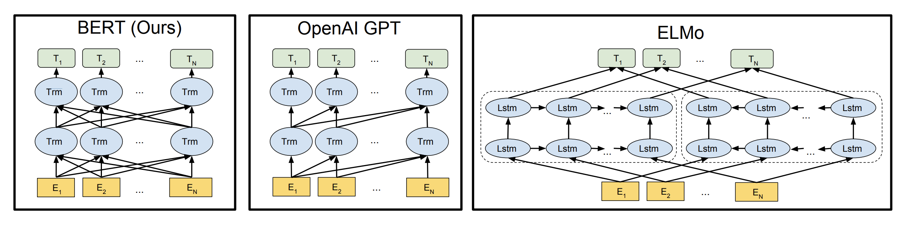
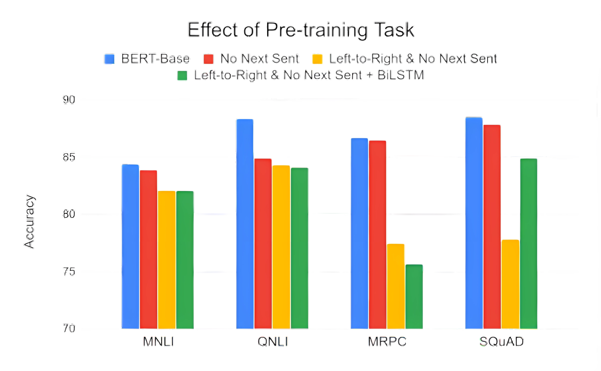
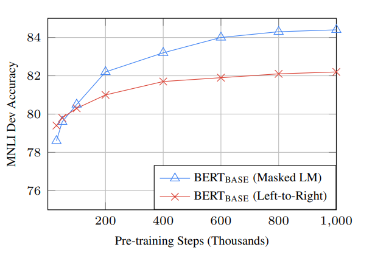
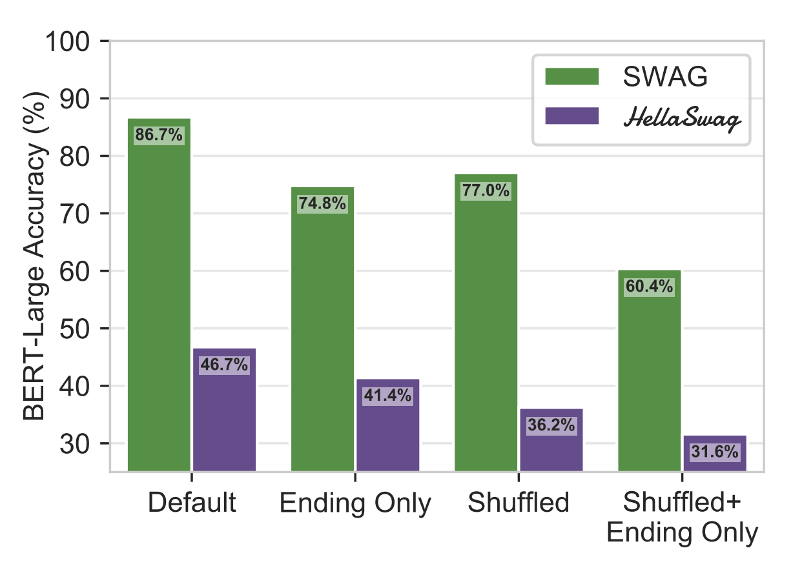
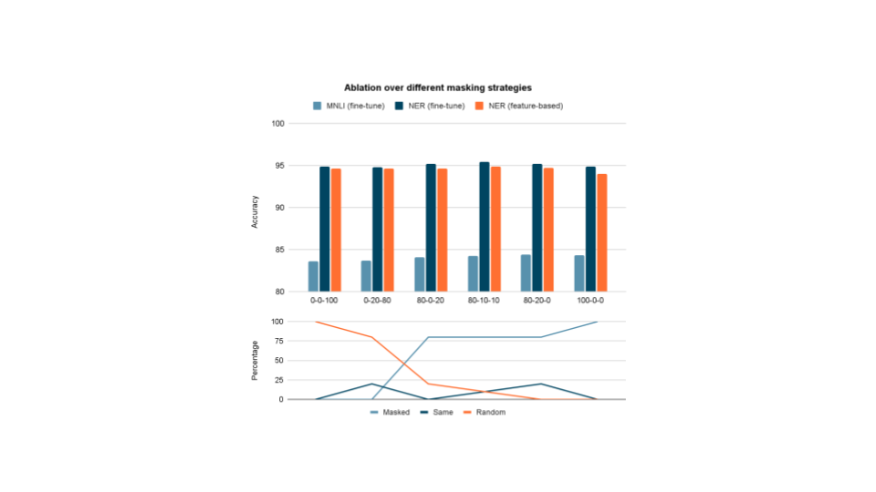
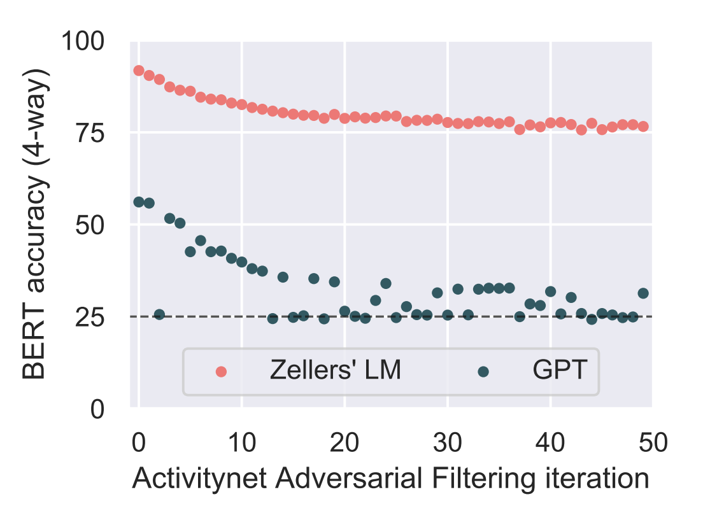
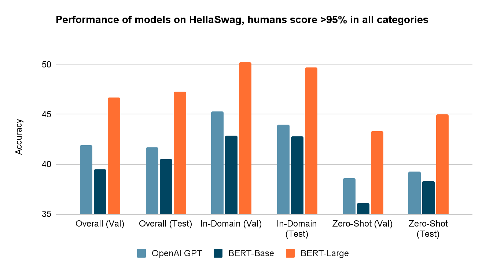

An Analysis of BERT: Pre-training of Deep
Bidirectional Transformers for Language
Understanding
Introduction
BERT is a revolutionary NLP model developed by Google, bringing about
a transformative shift in the field. This groundbreaking innovation has
significantly impacted language understanding tasks, empowering machines
to grasp context and nuances in human communication.
BERT, which stands for Bidirectional
Encoder Representations from
Transformers. Unlike recent language representation
models [2] [3], BERT is designed to pretrain deep
bidirectional representations from unlabeled text by jointly
conditioning on both left and right context in all layers. As a result,
the pre-trained BERT model can be finetuned with just one additional
output layer to create state-of-the-art models for a wide range of
tasks, such as question answering and language inference, without
substantial taskspecific architecture modifications.
BERT is conceptually simple and empirically powerful. It obtains new
state-of-the-art results on eleven natural language processing tasks,
including pushing the GLUE score to 80.5% (7.7% point absolute
improvement), MultiNLI accuracy to 86.7% (4.6% absolute improvement),
SQuAD v1.1 question answering Test F1 to 93.2 (1.5 point absolute
improvement) and SQuAD v2.0 Test F1 to 83.1 (5.1 point absolute
improvement).
Biography

Jacob Devlin
C: ? H: ?
Software Engineer @ Google
MS CS @ University of Maryland

Ming-Wei Chang
C: 98,000+ H: 47
Research scientist @ Google
PHD CS @ UIUC

Kenton Lee
C: 109,000+ H: 32
Research scientist @ Google
PHD CS @ University of Washington

Kristina Toutanova
C: 103,000+ H: 49
Research scientist @ Google
PHD CS @ Stanford University
Diagrams

Transformer Encoder
- Bi-directional (processes text left-to-right and right-to-left)
- Autoencoding
- Constraints words “seeing themselves” by masking certain tokens.
- Cannot be used for generation trivially.
- For example, BERT is encoder-only.
Transformer Decoder
- Unidirectional (processes text in only one direction)
- Autoregressive
- Constraints the self-attention by masking the tokens to the right.
- Primarily used for text generation.
- For example, OpenAI GPT is decoder-only.

Pretraining Dataset
- Books Corpus (800M words)
- English Wikipedia (2,500M words)
Pre-Training Objectives
Masked LM (MLM)
-
Randomly, 15% of all Word Piece tokens are chosen and masked
in each sequence.
These tokens are predicted rather than constructing the
entire input.
-
If theith token is chosen, then it is replaced with
(1) the [MASK] token 80% of the time
(2) a random token 10% of the time
(3) the unchanged i-th token 10% of the time.
Then, Ti will be used to predict the original
token with cross entropy loss.
Next Sentence Prediction (NSP)
-
Given sentences A and B for each pretraining example, 50% of the time
B is the actual next sentence that follows A (labeled as
IsNext), and 50% of the time it is a random
sentence from the corpus (labeled as NotNext).
-
Downstream tasks such as Question Answering (QA) and Natural Language Inference (NLI) are
based on understanding the relationship between two sentences, which is
not directly captured by language modeling. A binarized next sentence
prediction task is pretrained that can be trivially generated from any monolingual corpus.
Input Representation for BERT

Before feeding the input to Bert , we convert input into embeddings
using 3 embedding layer
-
Token embedding - New token called [cls] is added in the beginning.
WordPiece embeddings with a 30,000 token vocabulary is used as tokenizer.
-
Segment embedding - Segment embedding distinguishes between the two
provided sentences. A special token ([SEP]) is used for separation.
-
Position embedding - Provide information related to word order.
Fine-tuning BERT

Advantages of Fine-tuning
We use the pre-trained BERT model, append an untrained layer to the end, and
train the modified model for our classification task. This approach offers
several advantages over training a task-specific deep learning model
(e.g., CNN, BiLSTM):
-
Rapid Development:
- Pre-trained BERT model weights already capture extensive language information.
- Fine-tuning the model is quicker, resembling tuning the already well-trained bottom layers.
- Authors recommend only 2-4 epochs for fine-tuning, saving substantial time compared to training from scratch.
-
Data Efficiency:
- Fine-tuning on BERT's pre-trained weights requires a smaller dataset than training a model from scratch.
- Overcomes the need for a large dataset, a common challenge in training NLP models from the ground up.
-
Superior Results:
- Simple fine-tuning, typically involving adding one fully-connected layer to BERT and training briefly, achieves state-of-the-art results.
- Outperforms or matches custom architectures designed for specific tasks without the need for intricate adjustments.
Why is BERT important?
-
Consider the sentence: "He reached the bank after crossing the river.
Weary from his journey, he sat down on the grassy bank to rest." In traditional language models,
the sentence is typically processed in a linear fashion from left to right, potentially missing
the pivotal impact of the word "bank" on the overall interpretation. BERT, on the other hand,
acknowledges the importance of context-driven word relationships in crafting meaning.
This contextual awareness becomes particularly evident when considering instances like a
traveller resting on the riverbank rather than reaching a financial institution.
Social Impact
Positive Impact
-
Advancements in Chatbots and Virtual Assistants: BERT has contributed to
the development of more sophisticated and context-aware chatbots and virtual assistants,
enabling more natural and effective human-computer interactions.
-
Enhanced Search Engine Results: Search engines like Google use BERT to
better understand the context and nuances of search queries, leading to more accurate and
relevant search results. This has improved the overall search experience for users.
Negative Impact
-
Challenges in Bias and Fairness: The training data used for models like
BERT may contain biases present in the language data. As a result, these biases can be
perpetuated or even amplified in the model's output, potentially leading to biased or unfair
results. Addressing bias and ensuring fairness in language models is an ongoing challenge.
-
Privacy Concerns: The use of large language models raises privacy concerns,
especially when handling sensitive information. There are risks associated with the unintentional
generation of sensitive content or the extraction of sensitive information from the training data.
-
Resource Intensiveness: Training large models like BERT requires significant
computational resources, which can contribute to environmental concerns. Additionally, deploying
and running such models in production may require substantial computational power.
Industry Applications
-
Chatbots & Virtual Assistants: Better at understanding NLP queries.
-
Text summarization: For generating meaningful summaries of longer texts.
-
E-commerce: can enhance the search and recommendation systems in e-commerce
platforms by better understanding user queries.
-
Financial Analysis: BERT is used in financial applications for tasks
such as sentiment analysis of financial news.
-
Search Engines: Improves understanding of user queries.
-
Medical & Healthcare: BERT has been applied to medical and healthcare
domains for tasks such as clinical text analysis, medical record summarization, and information
extraction from medical literature.
-
Content generation: BERT can be used in content generation tools to produce
high-quality and contextually relevant text.
-
Human Resources:Assists in the analysis of resumes and job descriptions.
Follow-on Research
Note: The following papers were released within one year of BERT (May 2019 - Oct 2019)
-
ERNIE[4]: Incorporates
information-rich knowledge graphs during pre-training to enhance language representation with
lexical, syntactic, and knowledge information simultaneously.
-
XLNet[5]: Enables
bidirectional context learning through permutation-based training and addresses the "pretrain
-finetune discrepancy" (dependency between masked tokens) with its autoregressive formulation.
-
RoBERTa[6]: Improves
over BERT by conducting a meticulous replication study, optimizes key hyperparameters, and
demonstrates that BERT was significantly undertrained.
-
ALBERT [7]: Introduces
two parameter-reduction techniques to enhance memory efficiency and training speed with scalability,
and incorporates a self-supervised loss for inter-sentence coherence modeling.
-
DistilBERT[8]: Uses
knowledge distillation to compress BERT during pre-training, and shows that it is possible to
reduce the size of a BERT model by 40%, while retaining 97% of its language understanding
capabilities and being 60% faster.
-
T5[9]: Introduces a unified
text-to-text framework for transfer learning in NLP, and systematically explores various
pre-training objectives, architectures, and transfer learning approaches.
Implementations/results
-
Fine tuning of BERT for single sentence classification task using Cola dataset
We used The Corpus of Linguistic Acceptability (CoLA) dataset for the classification
of single sentences. This dataset consists of sentences annotated as either
grammatically correct or incorrect. Initially released in May 2018, it serves as
one of the assessments within the "GLUE Benchmark," where models such as BERT
participate in competition.
For fine tuning, our initial step involves adapting the pre-trained BERT model to
generate classification outputs. Subsequently, we aim to further train the model
on our dataset until the entire model, from start to finish, is tailored to our
specific task.
The PyTorch implementation by Hugging Face provides a range of interfaces tailored
for diverse NLP tasks. While these interfaces are constructed upon a pre-trained
BERT model, they feature distinct top layers and output formats customized to meet
the requirements of their respective NLP tasks. We use BertForSequenceClassification
class in our case.
We chose Batch size: 32, Learning rate: 2e-5, Epochs: 4 as suggested in paper,
and evaluated predictions using Matthew's correlation coefficient because this is
the metric used by the NLP community to evaluate performance on CoLA, got MCC
to be 0.514
Conclusion/Ablation Studies

The graph shows performance on pre-training tasks using the BERT-Base architecture.
- “No NSP” is trained without the next sentence prediction task.
- “LTR & No NSP” is trained as a left-to-right LM without the next sentence prediction, like OpenAI GPT.
- “LTR & No NSP + BiLSTM” adds a randomly initialized BiLSTM on top of the “LTR + No NSP” model during fine-tuning.
We can see that the unidirectional model does poorly on SQuAD (word-level), and Bi-LSTM mitigates that with bidirectional
context. Also, MLM is important in some tasks.

BERT-Base achieves almost 1.0% additional accuracy on MNLI when trained on
1M steps compared to 500k steps. The MLM model begins to outperform the LTR
model almost immediately.

BERT validation accuracy when trained and evaluated under several versions of
SWAG, with the new dataset HellaSwag as comparison, where,
-
Ending Only: No context is provided; just the endings.
-
Shuffled: Endings that are individually tokenized, shuffled, and then detokenized.
-
Shuffled + Ending Only: No context is provided and each ending is shuffled.
BERT’s performance only falls by 11.9% when context is omitted (Ending Only),
suggesting a bias exists in the endings themselves. When an ending seems unreasonable
in the absence of context, then the space of machine-generated endings must be
remarkably different from human-written ones.

Paper insights
SWAG is a commonsense NLI dataset. A model is given a context from a video caption
and four ending options for what might happen next for each question. Only one option
is correct: the video's actual next caption. Previous research (e.g., Gururangan et
al., 2018; Poliak et al., 2018) discovered that when humans write the endings to NLI
questions, they introduce subtle but significant class-conditional biases known as
annotation artifacts. Zellers et al. (2018) proposed Adversarial Filtering (AF) to
address this. The main idea was to create a dataset D that is antagonistic for any
arbitrary split of (D_train, D_test). Importantly, regardless of the final dataset
split, AF produces a final dataset that is difficult to model. We put HellaSwag, a
new NLI dataset that uses AF as the underlying workhorse, to the test; one that is
simple for humans but difficult for machines. When measured on SWAG with varying training
dataset sizes, BERT outperforms the ELMo NLI model (Chen et al., 2017) with only 64
examples. BERT, on the other hand, requires upwards of 16k examples to approach human
performance, after which it plateaus. Initially, SWAG Endings were generated using a
language model and then chosen to fool a discriminator using a two-layer LSTM. This
setup was resistant to ELMo models, but the shallow LM in particular produced distributional
artifacts that BERT was picking up on. To investigate this, the authors of the new
dataset used AF in two settings, comparing generations from Zellers et al. (2018) with
those from a fine-tuned GPT (Radford et al., 2018). Surprisingly, the results revealed
that the generations used in SWAG are so dissimilar to the human-written endings that
AF never loses accuracy to chance, instead settling at around 75%. GPT's generations,
on the other hand, are good enough that BERT accuracy drops below 30% over many random
subsplits of the data, highlighting the importance of the generator.


Peer-Review
References
[1]Jacob Devlin, Ming-Wei Chang, Kenton Lee,
Kristina Toutanova. BERT: Pre-training of Deep Bidirectional Transformers for Language Understanding.
arXiv.org (2018, October 11).
[2]Matthew E. Peters, Mark Neumann, Mohit Iyyer,
Matt Gardner. Christopher Clark, Kenton Lee, Luke Zettlemoyer. Deep contextualized word representations.
arXiv.org (2018, March 22).
[3]Alec
Radford, Karthik Narasimhan, Tim Salimans, Ilya Sutskever. Improving Language Understanding by
Generative Pre-Training.OpenAI (2018, June 11).
[4]
Zhengyan Zhang, Xu Han, Zhiyuan Liu, Xin Jiang, Maosong Sun, Qun Liu.
ERNIE: Enhanced Language Representation with Informative Entities.
arXiv.org (2019, May 17).
[5]
Zhilin Yang, Zihang Dai, Yiming Yang, Jaime Carbonell, Ruslan Salakhutdinov, Quoc V. Le.
XLNet: Generalized Autoregressive Pretraining for Language Understanding.
arXiv.org (2019, June 19).
[6]
Yinhan Liu, Myle Ott, Naman Goyal, Jingfei Du, Mandar Joshi, Danqi Chen, Omer Levy, Mike Lewis, Luke Zettlemoyer, Veselin Stoyanov.
RoBERTa: A Robustly Optimized BERT Pretraining Approach.
arXiv.org (2019, July 26).
[7]
Zhenzhong Lan, Mingda Chen, Sebastian Goodman, Kevin Gimpel, Piyush Sharma, Radu Soricut.
ALBERT: A Lite BERT for Self-supervised Learning of Language Representations.
arXiv.org (2019, September 26).
[8]
Victor Sanh, Lysandre Debut, Julien Chaumond, Thomas Wolf.
DistilBERT, a distilled version of BERT: smaller, faster, cheaper and lighter.
arXiv.org (2019, October 2).
[9]
Colin Raffel, Noam Shazeer, Adam Roberts, Katherine Lee, Sharan Narang, Michael Matena, Yanqi Zhou, Wei Li, Peter J. Liu.
Exploring the Limits of Transfer Learning with a Unified Text-to-Text Transformer.
arXiv.org (2019, October 23).
Team Members
Chandra Teja Kommineni, Debajyoti Chakraborty, Ekam Chahal
Social Impact
Positive Impact
Negative Impact